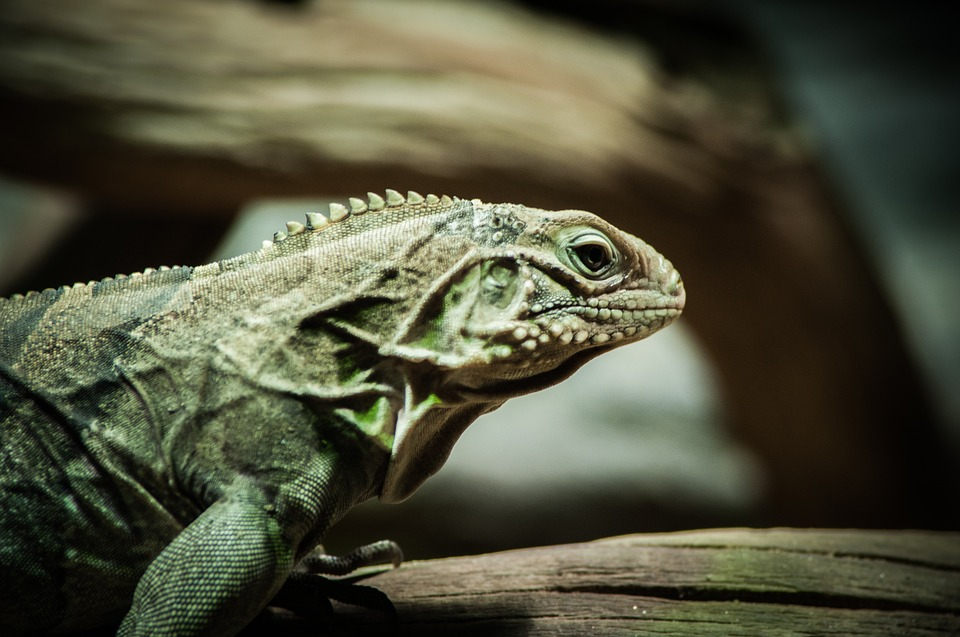

Hjem
Øgle

Øgler kan i utgangspunktet betegne krypdyr som har ben og som ikke er skilpadder eller krokodiller.
De er kjent fra perm, for omlag 270 millioner år siden.
I dag er øglene den største gruppen av krypdyr.
Reptiler